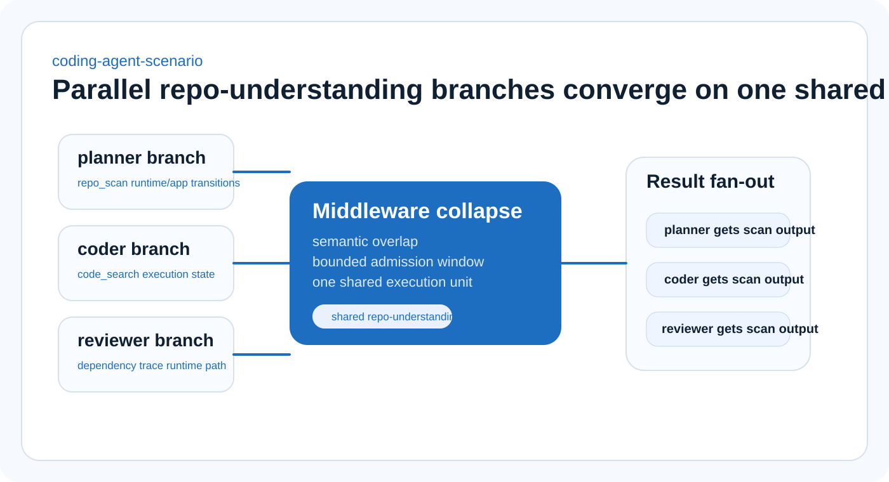

Architecture overview
Overlap is a runtime problem, so gemma4-wdc solves it in the runtime.
gemma4-wdc sits between local agents and downstream tools. It fingerprints incoming work, opens a bounded admission window, collapses compatible tasks into shared execution units, and fans a single result back to every attached branch.
Task ingress
Admission window
Shared execution units
Core components
The local runtime stays narrow, observable, and honest about scope.
- Agent task generation: simulated or hybrid local agents emit structured SQL, API, document, code-search, and research tasks.
- Task ingress registry: every task is recorded with agent identity, branch lineage, payload, and arrival time.
- Fingerprinting: exact structural hashing plus lightweight semantic matching detect overlap.
- Admission control: the first compatible task opens a bounded, non-resetting admission window.
- SEU manager: one shared execution unit owns subscribers, execution lifecycle, and result fan-out.
- Observability: counts, savings, timings, and safety behavior stay visible throughout the run.
Laptop-first shape
One machine. One middleware service. Many lightweight branches.
The architecture assumes a single-machine proof of concept: one local FastAPI backend, lightweight or simulated agents, and mock or lightweight tool executors. It is built to make the systems thesis legible on modest hardware rather than to imitate a cluster.
Hybrid mode can attach one real local model adapter, but the core runtime remains useful and complete in simulation mode.
Timing primitive
The admission window is where the system earns its savings.
The first compatible task opens a short, bounded window in `PENDING`. Matching tasks that arrive inside that interval subscribe to the same SEU. The timer does not reset, which keeps delay bounded and behavior predictable.
Open
First arrival creates a pending SEU.
Attach
Matching subscribers collapse into the same execution.
Execute
One backend call runs when the window expires.


Flagship use case
Coding-agent overlap makes the architecture instantly legible.
Repo-understanding branches are a practical place to prove the thesis. Multiple local branches can ask where state transitions happen, what a module does, or where benchmark code lives. The middleware turns repeated scans into one shared execution instead of repeated backend work.
That makes coding-agent workflows one of the strongest demonstrations for laptop-scale shared execution: the work is expensive enough to matter, and the overlap is easy to understand.
Open example scenarios →